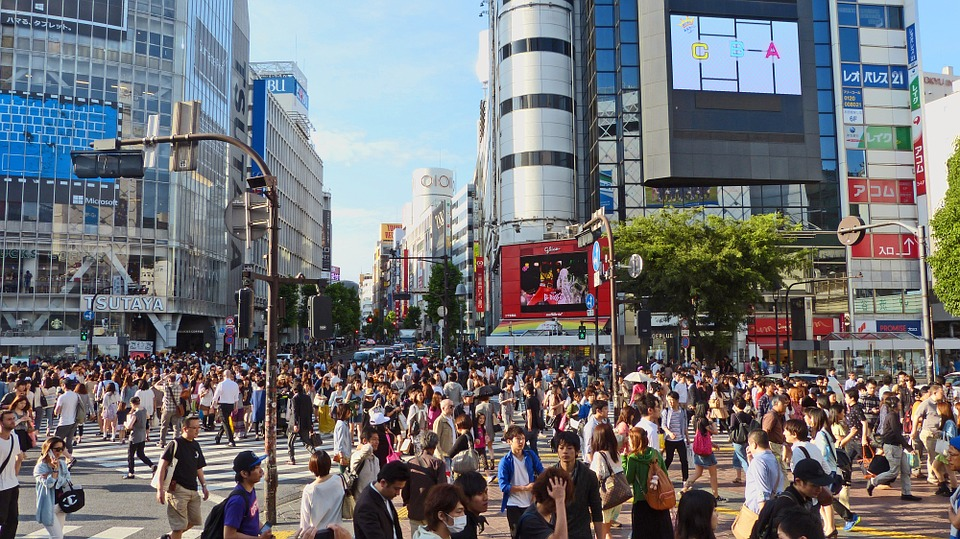
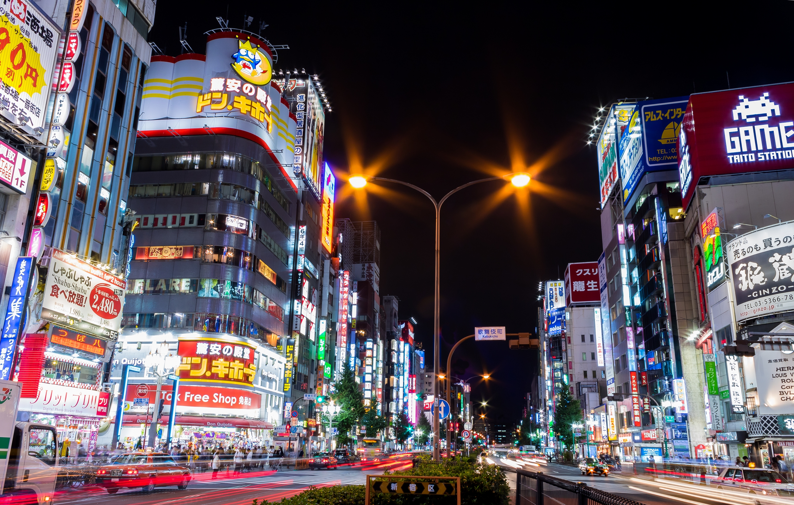
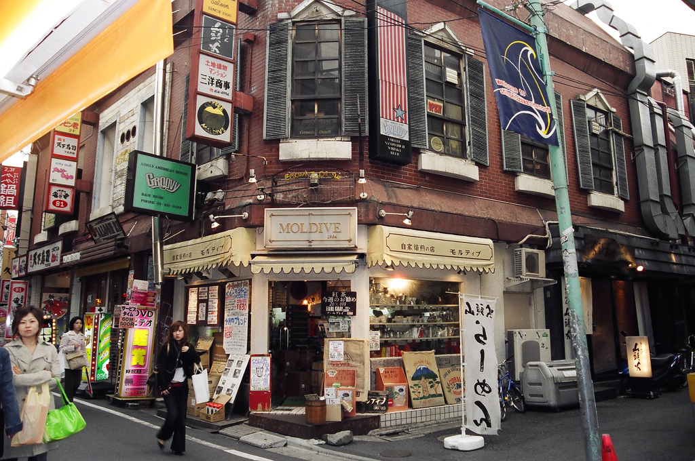
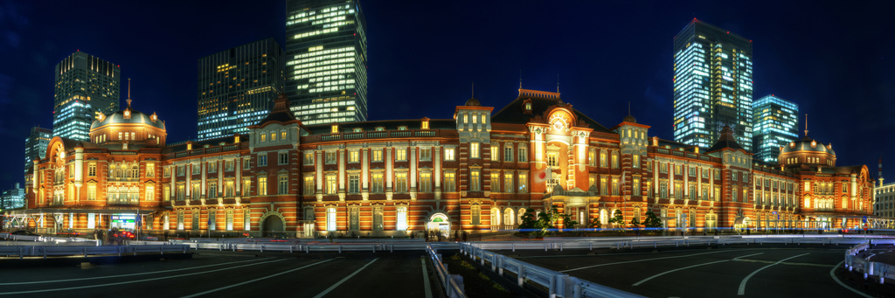
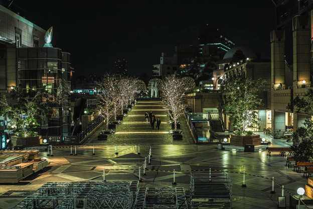
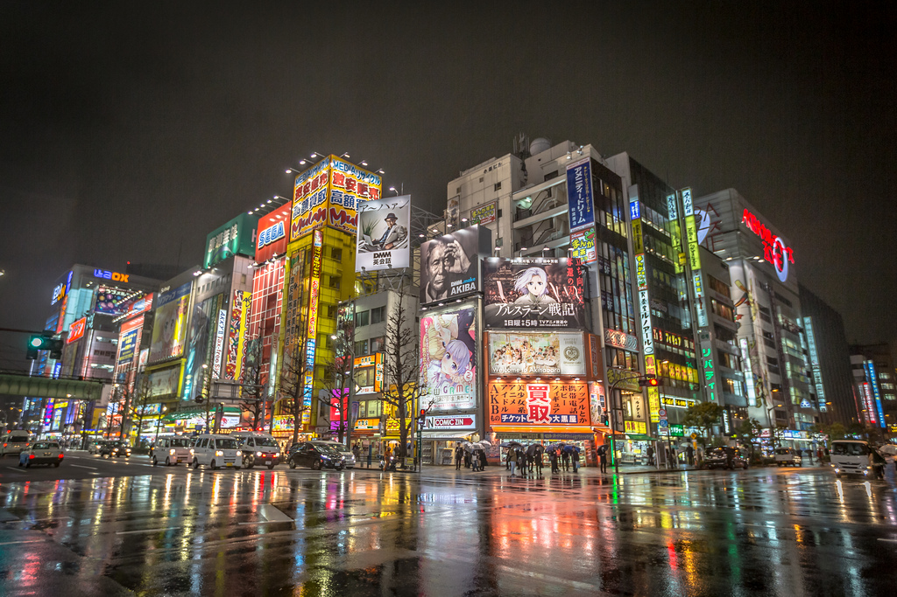
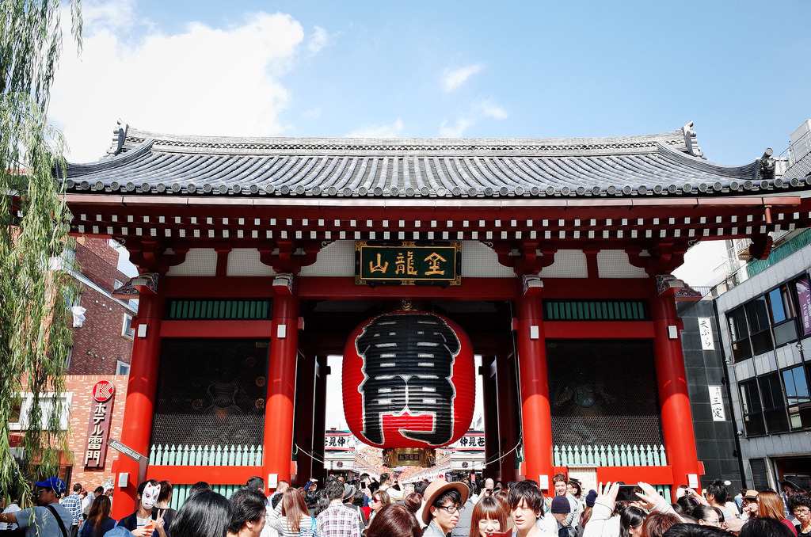

Welcome to Tokyo, Japan
by Naho 25.November 2018 Japan
| 1 | Shibuya |
| 2 | Shinjuku |
| 3 | Shimokitazawa |
| 4 | Tokyo |
| 5 | Ebisu |
| 6 | Akihabara |
| 7 | Harajuku |
| 8 | Asakusa |
| 9 | Odaiba |

Here is one of the most crowded places and the site for the famed "Shibuya crossing". Shibuya is mainly popular among younger people and is known as "the city" area. There are many pastimes and activities such as karaoke, shopping malls, restaurants, and shrines... leaving the impression that just one day might not be enough for the tedious travellers. When you first arrive at Shibuya station, you will see a dog statue: "Hachiko", which is a representative figure of this place and people often use it as a meeting point or for taking touristy pictures. I strongly recommend you to do some shopping at 109 which is known to cater to fashion trends of young women. Next you need to walk for a bit, however visiting Meiji Shrine is a historical hotspot not to be missed. You should also get lunch at Gyukatsu Motomura, which is famous for their fried beef cutlet. There is always a long line, but it is worth to wait for the tender and juicy meat that is about to come. Savory foods are always best paired with a sugary snack, and what better place to satisfy your sweet tooth than Shiawase no pancake? This is the crowned champion for fluffy pancakes. After your food adventure, if you want to get a souvenir you should definitely visit "Mega Don Quijote", which has anything and everything at the cheapest price, such as home applications, cosmetics, food, drinks, and toys.
SHIBUYA TIP

Shinjuku is similar to Shibuya, but it is geared more towards adults since there are many restaurant bars called Izakayas to enjoy a drink or ten. Izakayas are one of the most iconic experiences of Japanese culture, as you may see many businessmen in suits yet downing beers like an undergrad student. They serve a variety of foods and drinks ranging from croquettes, edamame, ramen, to the holy grail of Japanese liquor: sake. There are two main areas to try out izakayas, one being "Omoideyokochou" where the alley shows off an old yet nostalgic atmosphere of post war Japan. Another one is "Kabuki chou" , the red light district in which Shinjuku earned its title as the city that never sleeps. It has many izakayas, but also a unique "robot restaurant" where you can enjoy extraordinary light shows every night for, of course, an extraordinary fee.
SHINJUKU TIP

Retro would be the best word for expressing Shimokitazawa out of all the adjectives in the Webster dictionary. You can find many walls or door shutters with unique drawings fashioning a light "hipster" era. I strongly recommend you to do some shopping here and you can find cheap second hand clothes or limited hand-made accessories. If you are a movie fan, you cannot miss "Shimokita Toriwood" which is a movie theater only in Shimokitazawa and has a small 47 seat venue. They mainly show short films made by rising young directors, however every turn of the century they premiere megahit movies such as "Your Name" and "The Voices of a Distant Star." There are also many unique restaurants namely "Honya B & B", in which the abbreviation stands for beer and books. For those not into local brews, there is also a side selection of coffees. There are always events by young writers and editors hosted there. For dessert, what about "natto doughnuts"? Not to be mistaken with not yo doughnuts, Natto store "Sendaiya" has a signature doughnut made from natto that is surprisingly refreshing and not repulsive as regular natto.
SHIMOKITAZAWA TIP

If you come to "Tokyo", you need to visit the place that it is named after, Tokyo station. Despite its overwhelming underground maze-like structure, this place has the most convenient train access to anywhere in the greater Tokyo region, so it's the best to start your trip from here! If you were to browse however, you should visit the "Tokyo station Ichiban Gai" which is located at Tokyo station Yaesu exit. You can find the best souvenirs from all over the world here; for example, from "Okashi Land" (Okashi translates to candy in Japanese). Taking a gander, it is also easy to spot the three biggest Japanese candy companies, "Calbee", "Ezaki Glico", and "Morinaga& Co" with their own Cirque du Soleil phantasma through the visual aesthetics of confectionary art. You can also get limited edition sweets which are only sold in Tokyo station. While you are there, you should also definitely try "Calbee plus", which are chips fried fresh directly in-store. If you are looking for the most popular souvenir, it would be the "Tokyo banana", a fluffy cake containing caramel banana flavored custard cream inside. There are also interesting streets, one of which is the "Tokyo Ramen Street" that has the five best ramen restaurant chains gathered from all throughout Tokyo. It opens from morning to night, so you can try a "ramen breakfast". Another one is the "Tokyo Character Street" which has tons of character stores such as Hello Kitty, Miffy, and Snoopy. They are popular not only with kids, but also adults.
Tokyo station TIP

Ebisu is one of the most fashionable places in Tokyo. When starting your journey, you should walk though Ebisu Garden Place, a grandiose red carpet city within a citydepicted in multiple movies. Especially during winter, illuminations cover the surrounding buildings and you can enjoy shopping, movies, and strolling through museums with a flamboyant view. You also should wine and dine at "Ebisu Yokochou" which has a busy Japanese atmosphere with multiple stalls offering Oden and Kushiyaki on their menu. "Ebisu Dagashiya bar" would be the best place for dessert where you can pick the all-you-can-eat Dagashi (traditional Japanese sweets) at only five dollars. To end the evening, you should not miss a beautiful night view from "Tenbou Restaurant Gai" of Ebisu Garden Place where you can enjoy dinner with a view from the 30th floor.
Ebisu TIP

Akihabara is what some would say, an Otaku heaven ... the holy land of anime. To start your pilgrimage, make your way on to a Maid cafe , where cute girls dressed in maid costumes serve their temporary masters a handmade dish. The most popular one would be Akiba Zettai Ryoiki in which the concept is a place created by the gods for cats to take on a human form to pay a debt of kindness back to humans. Their food menu is also very interesting such as Moe Moe Pink Ramen (Moe means to have a feeling of strong affection);? you can also ask for the staff to do some performances as well. You also cannot miss a place called the owl cafe, where you can drink exquisite coffee with exquisite owls. They have many unique owls such as the false barn owl and the Siberian eagle owl, with their round friendly eyes and fluffy wings.
When you come to Harajuku station, you will find Takeshita Street where you can explore Japanese Kawaii (cute in Japanese) culture. This place is especially popular among teenage girls and you can do shop, eat, and enjoy a few performances as well. Do not miss the Kawaii Monster Cafe , distinguished by its exceedingly colorful decoration that looks as if a peacock gave birth to a theme park. Their foods are also in similar fashion, with the signature dishes being a multi colored pasta, rainbow layered cake, and vanilla ice cream. You can also enjoy a vivid performance while eating kawaii food. This place is the best spot to get matching items with your friends and family since you can find the same clothes in many different colors .. a perfect way to say you have tasted the rainbow. Beat that, Skittles.

Odaiba is an artificial island off the coast of Tokyo famous for a must-go cultural experience: the onsen (hot spring in Japanese). Oedo Onsen Monogatari is a picturesque recreation of old Edo period of Japan where people go to enjoy a public bath with food and drinks sold in the vicinity of its grounds. Here, people can try out yukatas (casual summer kimono) from over 19 different kinds of patterns. Additionally, there are ennichis (festival games) that include shooting games, goldfish scooping, and ring toss. In total, there are 13 types of baths including an outside bath and a sauna. After taking a dip, a variety of traditional Japanese foods are served outside in stalls such as katsudon, kaisendon, and yakisoba . They also have a place to spend the night, so you do not have to worry about the hustle for going back to the hotel. Odaiba is also famous for a 65 foot tall model of a Gundam (from the anime) as well as a fun-sized version of the Statue of Liberty. There are many events all year round such as fireworks and illuminations, so do not forget to check upcoming events!

This place is the best to explore traditional Japanese culture. You should begin your visit from Kaminarimon and keep walking down Nakamise Street. Along the sides, you can see vendors promoting snacks such as Dorayaki (bean jam pancakes), kaminariokoshi (made with rice and peanuts with sugar and starch syrup), and agemanjyu (deep-fried sweet buns). After you walk through the street, you will get to Sensouji temple. If you have some extra time, you can also stop by the Tokyo Sky Tree , which is approximately 20 minutes on foot from Asakusa. Tokyo Sky Tree is the tallest building in Japan and you can take an elevator to the top for a magnificent view of the entire Tokyo area.
ASAKUSA TIP